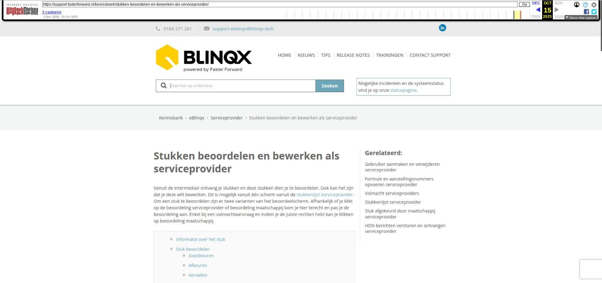

Stukken beoordelen en bewerken als serviceprovider

Tekstinhoud
Stukken beoordelen en bewerken als serviceprovider
Vanuit de intermediair ontvang je stukken en deze stukken dien je te beoordelen. Ook kan het zijn dat je deze wilt bewerken. Dit is mogelijk vanuit één scherm vanuit de stukkenlijst Serviceprovider. Om een stuk te beoordelen zijn er twee varianten van het beoordeelscherm. Afhankelijk of je klikt op de beoordeling serviceprovider of beoordeling maatschappij kom je hier terecht en pas je de beoordeling aan. Enkel bij een volmachtaanvraag en indien je de juiste rechten hebt kan je klikken op beoordeling maatschappij.
Informatie over het stuk
Stuk beoordelen
Goedkeuren
Afkeuren
Vervallen
Historie goed- en afkeuringen document
Document bewerken
Document splitsen of samenvoegen
Document bewerken
Informatie over het stuk
In het scherm wordt diverse informatie getoond over het stuk, namelijk:
Soort document = de omschrijving van het soort document
Stuk = De omschrijving van het stuk
Ontvangstdatum = datum van uploaden/dx ontvangen van het laatste document onder het stuk
Aangeleverd door = degene die in Soort documenten beheer bij het document staat geselecteerd bij 'Aan te leveren door'
Persoon of onderpand = deze wordt opgehaald indien aanwezig. Het onderpand is het onderpand van de hypotheek en de persoon is de persoon gekoppeld aan het stuk
Bestandsgrootte = grootte van het bestand gekoppeld aan het stuk. Dit wordt weergeven op basis van de grootte in het XML.
Stuk beoordelen
Een stuk kan beoordeeld worden door zowel een medewerker serviceprovider als medewerker volmacht. Wanneer het een volmachtaanvraag betreft dan moet het stuk zowel beoordeeld zijn door de medewerker serviceprovider en medewerker volmacht voordat deze naar de maatschappij gestuurd kan worden. Ook moet de status van het stuk 'Voorlopig akkoord' zijn om deze naar de maatschappij te kunnen verzenden. Een volmachtaanvraag herken je aan 'Volmacht' op 'Ja' in de productkaart en het volgende icoon in de stukkenlijst:
Om het stuk te beoordelen klikt de medewerker serviceprovider op de status in de kolom 'Beoordeling SP'. Er verschijnt dan een nieuw scherm 'Stuk beoordelen als serviceprovider'.
De medewerker volmacht klikt op de status in de kolom 'Beoordeling MIJ' om vervolgens in het scherm 'Stuk beoordelen als volmacht' het stuk te beoordelen. In de kolom 'Beoordeling MIJ' kan je alleen klikken als je de juiste rechten hebt en het stuk hoort bij een volmachtaanvraag.
Voor het beoordelen kan je kiezen voor goedkeuren, afkeuren of vervallen.
Goedkeuren
Wanneer je klikt op 'Goedkeuren' dan zal het stuk bij 'Beoordeling SP' de status 'Voorlopig akkoord' krijgen. Indien een volmacht medewerker het stuk goedkeurt dan zal de 'Beoordeling MY' op 'Voorlopig akkoord' komen te staan. De medewerker serviceprovider heeft als het goed is zelf het stuk al beoordeeld. Mocht dit niet zo zijn dan verandert ook de status 'Beoordeling SP' naar 'Voorlopig akkoord' wanneer de volmacht het stuk goedkeurt.
Afkeuren
Na het drukken op 'Afkeuren' opent er een pop-up en daarin moet een "standaard afkeurreden" geselecteerd worden. De tekst die hoort bij deze standaard afkeurreden wordt getoond in het toelichtingsveld. Het is mogelijk om deze nog handmatig aan te vullen/aan te passen. De standaard afkeurredenen beheer je in de module 'Standaard afkeurredenen voor stukken'. Let op: wanneer je een andere afkeurreden kiest dan verdwijnt de aanvulling die je handmatig hebt gedaan. Naast deze standaard afkeurredenen is ook de optie Anders n.l. altijd beschikbaar en bij de keuze hiervan komt er een (verplicht) invoerveld waarin je de reden kunt typen. Deze toelichting komt te staan in het toelichtingsveld van het DA-bericht. Bij het afkeuren van een volmachtaanvraag wordt zowel de maatschappijbeoordeling als serviceproviderbeoordeling aangepast naar 'Afgekeurd en opnieuw aan te leveren (zie toelichting)'. Is de aanvraag geen volmachtaanvraag dan wordt bij het afkeuren alleen de serviceproviderbeoordeling aangepast.
Het kan zijn dat de maatschappij/geldverstrekker het toegestuurde stuk afgekeurd. Hier lees je hoe je daar als medewerker volmacht mee om kan gaan.
Vervallen
Indien een stuk niet meer nodig is voor een aanvraag dan kan je deze op vervallen zetten. Als je op 'Stuk vervallen' klikt dan wordt er gekeken of het stuk al in een DA-bericht naar het intermediair is gestuurd. Is dit het geval dan wordt hij opgenomen in de vervallen stukken met de standaard tekst voor de toelichting 'Stuk is niet meer nodig'. Is het stuk nog niet via een DA-bericht naar de intermediair verstuurd dan kan deze verwijderd worden.
Rechts wordt er een preview getoond van het document.
Historie goed- en afkeuringen document
In deze tabel kan je zien wanneer het document eerder is goed- of afgekeurd. Hierbij staat de tijd en door wie dit is gebeurd. Wanneer het document is afgekeurd komt er een extra toelichting bij te staan. Deze wordt zichtbaar als je klikt op het plusicoon in de tabel. Ook kan je hier zien welke documenten eerder gekoppeld zijn geweest aan het stuk. Daarnaast worden de statusberichten die verzonden zijn betreffende dit stuk weergegeven. Dit is bijvoorbeeld het geval wanneer een intermediair stukken probeert toe te sturen via HDN, maar dit is niet gelukt, bijvoorbeeld door een foutief bestandstype.
Per regel zijn er ook verschillende iconen te zien. Middels het loepicoon kan je een preview openen van het betreffende document. Via het koppelicoon is het mogelijk om het eerder gekoppelde document opnieuw te koppelen aan het stuk. Hiermee vervang je het document wat op dat moment gekoppeld is aan het stuk. Het herkoppelen wordt ook al melding getoond in de tabel. Wanneer er onder het stuk geen document gekoppeld mag worden dan zijn de koppeliconen niet zichtbaar.
Document bewerken
Het is ook mogelijk om de documenten die aan het stuk gekoppeld zijn samen te voegen, te splitsen of te bewerken. Hiervoor gebruik je de knop 'Bewerk PDF', waarbij je keuze hebt om het PDF te bewerken of het documenten te splitsen of samen te voegen.
Document splitsen of samenvoegen
Hierbij is het mogelijk om een document te splitsen in meerdere documenten en eventueel het afgesplitste document ook direct aan het stuk te koppelen. Daarnaast kan je ook documenten samenvoegen, zodat dit één document wordt. Wanneer je klikt op 'Document splitsen/samenvoegen' komt je eerst in het scherm uit om een document te splitsen. Door op de knop 'Document toevoegen' te klikken kan je het document selecteren die je wilt samenvoegen. Hier lees je er meer over.
Document bewerken
Ook is het mogelijk om bewerkingen te doen in het documenten zelf. Standaard zie je al wat bewerkingsopties staan. Door in het dropdownmenu te kiezen voor 'Bewerk pdf' komen er meer opties zichtbaar. Hier lees je meer over de mogelijkheden.
Laatste update: 13 december 2023
Was deze informatie nuttig?
Ja Nee